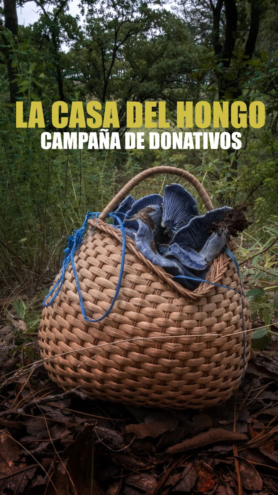
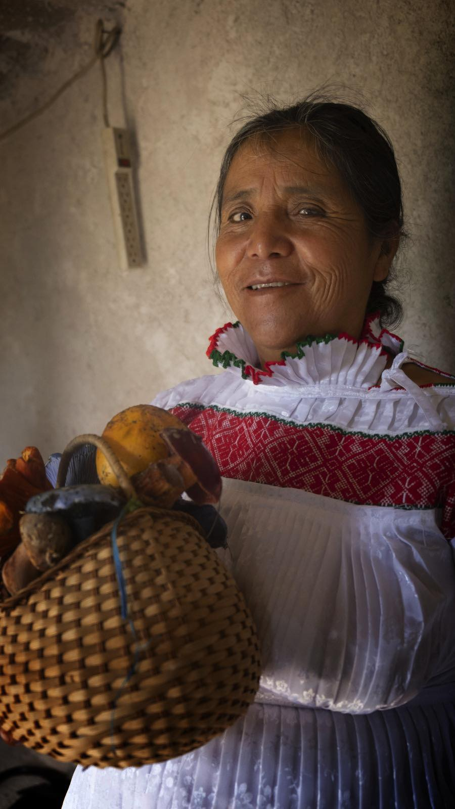
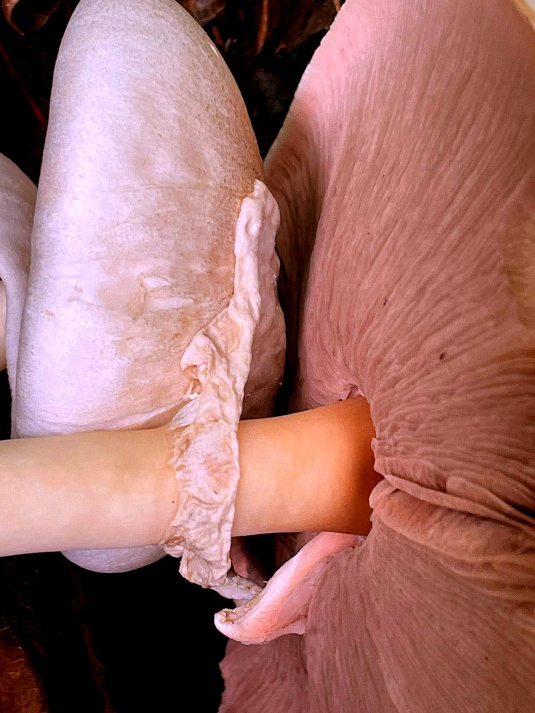

We are on our path to developpe our community and grow stronger
Be apart of our community and share our love to every part of our world

Dear friends and benefactors,
We are the Paro de Barrio collective, a community of mutual aid where solidarity and collaboration are our driving forces. Made up of Métis community artists and Hñähñu (Otomi) mushroom experts, our collective works in symbiosis on projects that combine artistic techniques with ancestral and scientific knowledge of mycology and ethnomycology in the Amealco region of Querétaro, Mexico.
Our main aim is to create experiences, works of art and stories that highlight the vital importance of mushrooms and mushroom experts in sustaining life, particularly in the face of today's environmental crisis.
One project that is particularly close to our hearts is "Ngu Hi'ethe/The House of Mushroom", by Doña Martha, nicknamed "the mushroom woman", a respected mushroom expert in the Hñähñu community of Xajay. Together with her daughter Mago, their ambition is to create "The House of Mushroom", a sanctuary dedicated to preserving and disseminating traditional knowledge of mushroom gathering, cultivation and cooking. This ambitious and essential project is a vital step towards recognising the vital reproductive work of indigenous communities and mycorrhizal (plant-fungus) networks in sustaining life and safeguarding our planet, against a backdrop of environmental degradation.

To bring this project and other crucial initiatives to life, we need your help. Your generosity will enable us to organise research and learning excursions on mushrooms, in collaboration with experts. These enriching trips will enable people to learn about the forest ecosystem and discover how to support the mushroom networks that play such a crucial role in preserving our planet.
By making a donation to Paro de Barrio, you are taking part in these behind-the-scenes battles to preserve our environment, improve living conditions and ensure that communities are recognised for their work. Your financial support will make a direct contribution to helping families out of precariousness and poverty, by giving them the chance to live a decent and dignified life.
We strive to distribute the funds fairly: some will go directly to the women who are at the heart of our collective, in recognition of their vital work, while others will be used to continue funding other projects, so that we can continue to create and produce for a better world.
We would like to thank you most sincerely for your support and commitment. Together, we can create meaningful change and work towards a sustainable and prosperous future for all.
With deepest gratitude,
The Paro de Barrio collective
